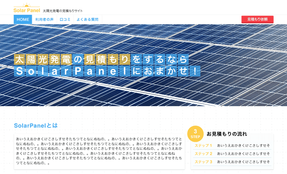
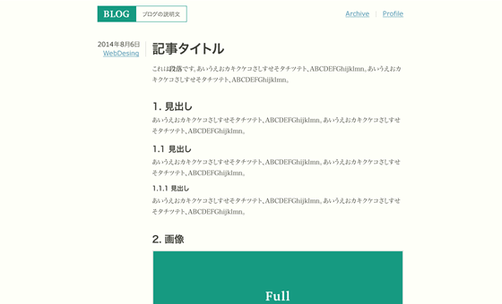
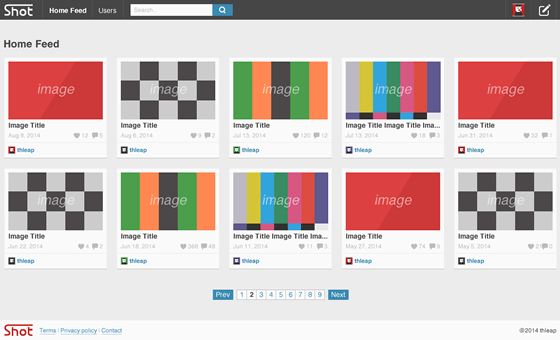
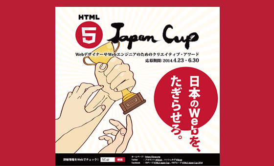

Design
Web のデザインを 2011年からやっています。iOS アプリや紙媒体のデザインも何度か経験しましたが、基本的にはブラウザを通して映し出されるものを作っています。
サイトにはじめて訪れる人が興味を示すような「魅力的なデザイン」、サイトの利用者が長く使い続けたいと思うような「使いやすいデザイン」を目指しています。
-

太陽光発電の見積もりサイト
エコエネルギーの優しく澄んだ印象が伝わるように、特に配色にこだわって作りました。
View Page -

書体が入り混じったブログ記事
見出しと本文の見分けをわかりやすくするために、異なる書体を用いてデザインしました。
View Page -

画像フィード
「グリッドレイアウトに適したコンテンツとは何か？」を考えながら画像フィードを作りました。
View Page -

HTML5 Japan Cup のフライヤー
2014年に開催された「 HTML5 Japan Cup 」のフライヤーです。コンテストの認知度を上げるために制作しました。
View Page